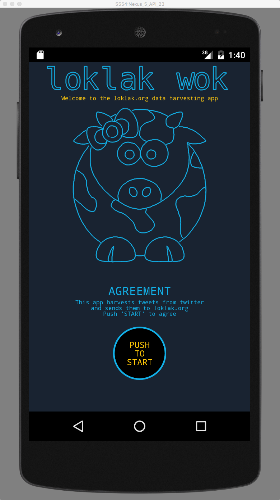
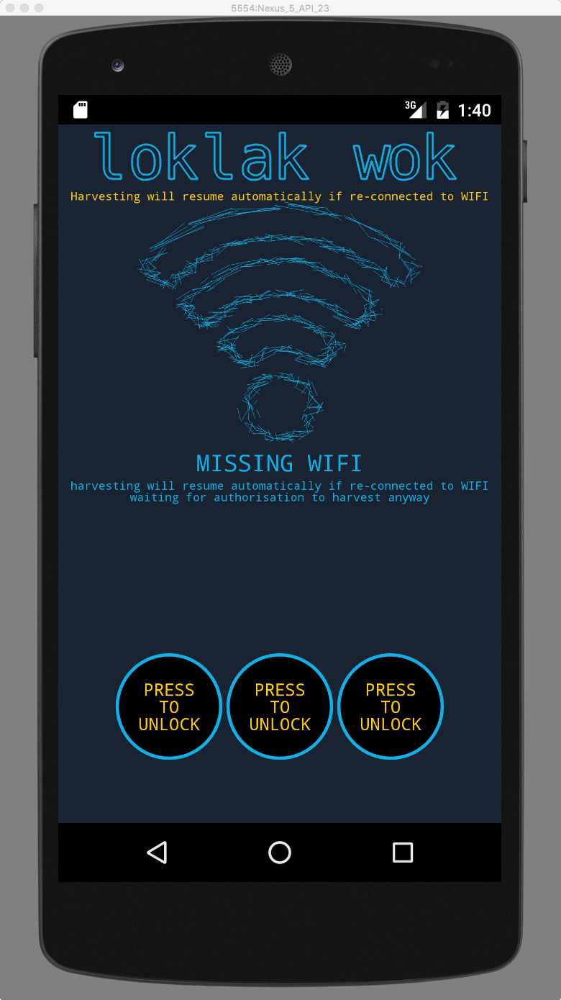
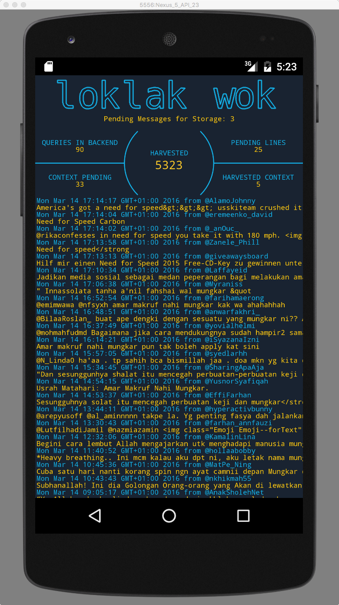
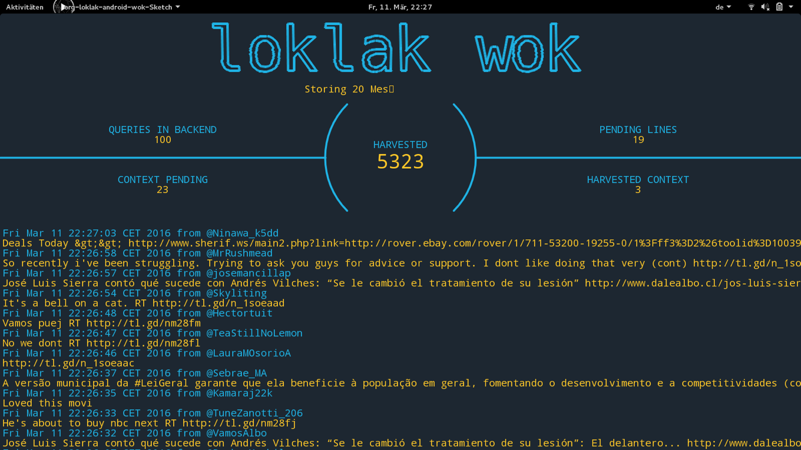
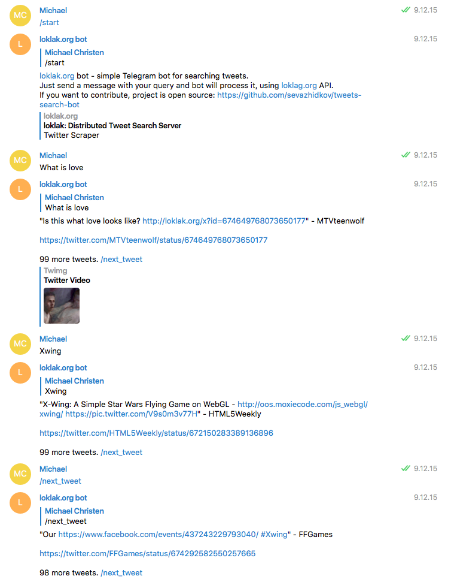
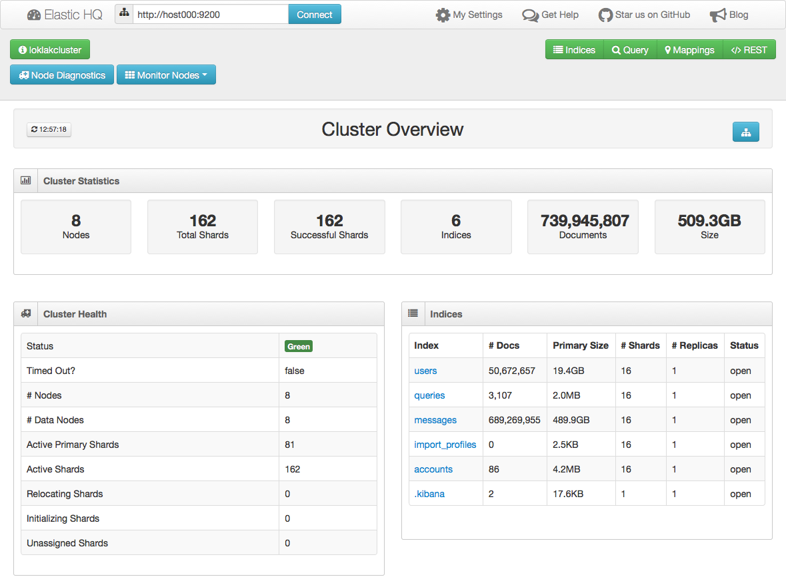
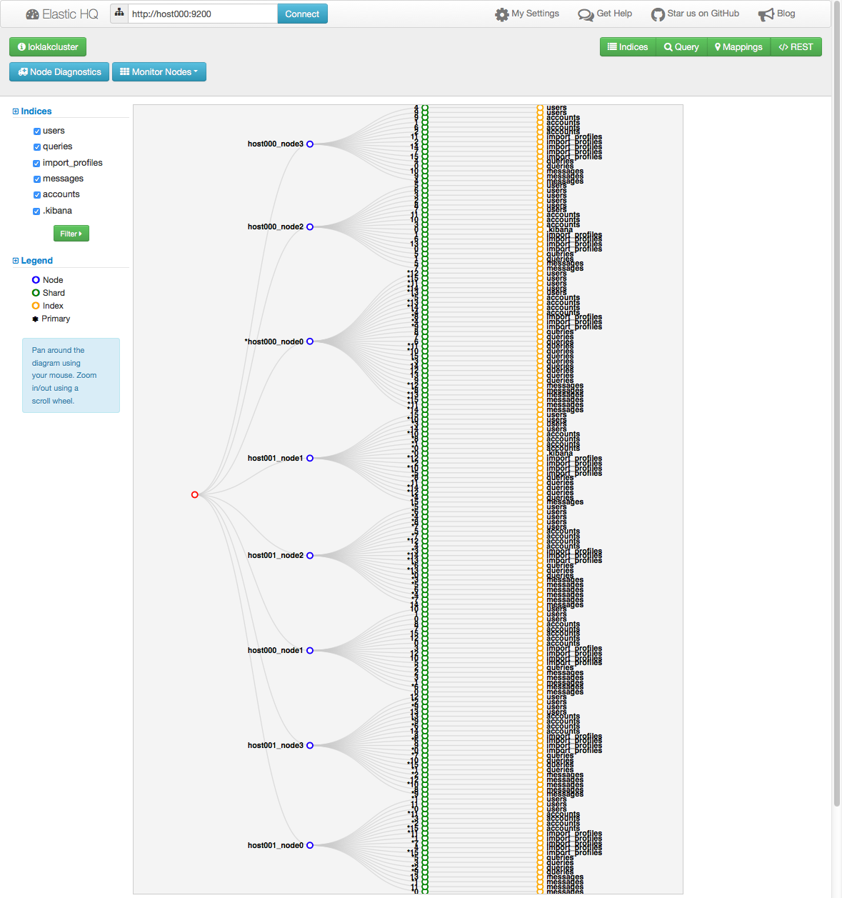
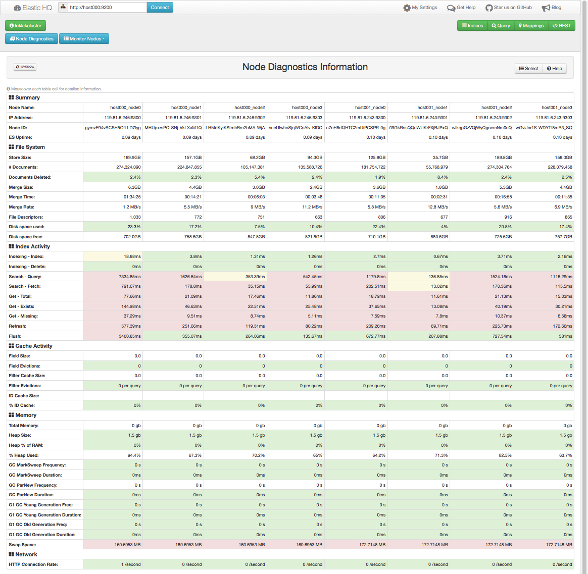
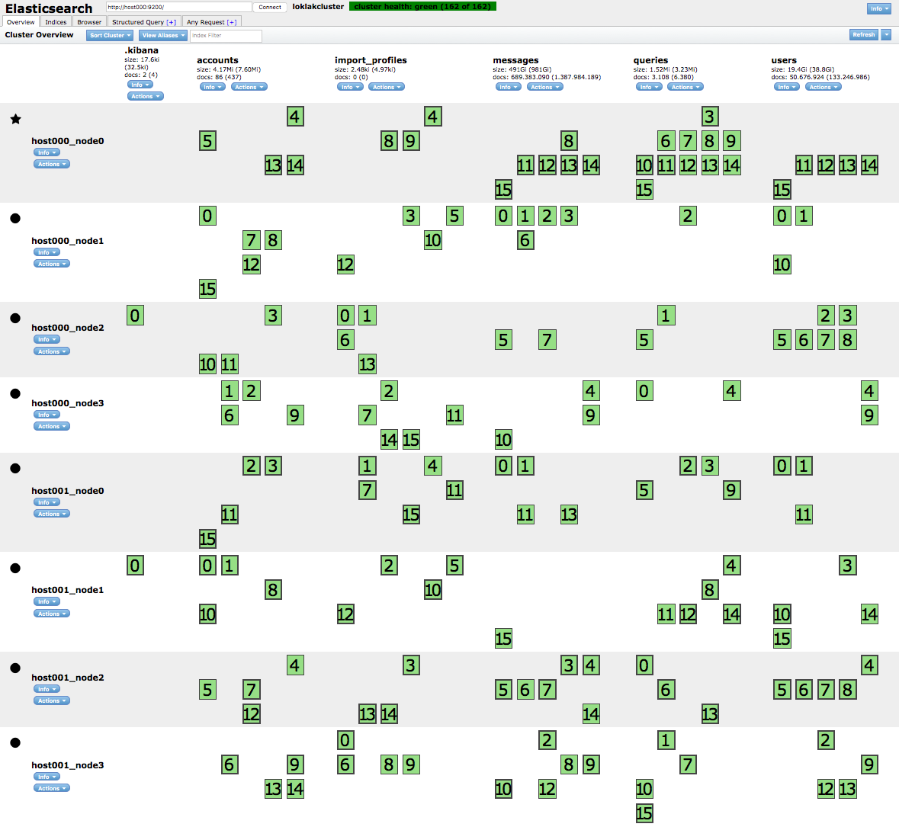
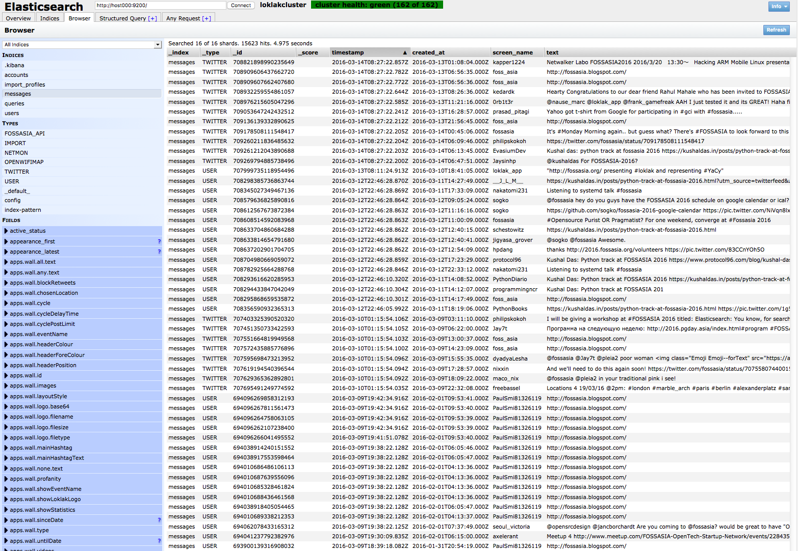

A loklak Showcase
Here there are some of the things you can do with loklak!
API libraries for loklak
Check out the following project to create applications with loklak:
- loklakj_lib - this library provides the core data structures for loklak.
- ruby-loklak-api - a loklak client in ruby
- LoklakHeatmap - a search client webpage which shows search results on a map
- loklak_3d - 3D rendered objects for the loklak mascot which you can print
- loklak-node - Node.js wrapper for loklak.org API
- loklak_wok_android - a loklak tweet harvester for android devices
- loklak_wok_desktop - desktop-enabled clone of loklak_wok_android
Mass-Message Analysis with Kibana!
You can use Kibana to analyze large amounts of Tweets
as a source for statistical data:

loklak wok - Android App
We have a tweet harvester called loklak wok which runs on your android
phone and collects tweets for loklak.



loklak wok - Desktop App
A desktop version of the android loklak wok is the desktop wok:

loklak wok - Desktop App
Another loklak android apploklak android app:

Telegram Chat Bot
It's possible to retrieve single tweets within telegram using the telegram loklak bot.
This is a kind of 'first try' to make an AI out of the tweet database

Large-Scale Elasticsearch Cluster
loklak has a built-in elasticsearch node, bit it can also connect as a transport client to a elasticsearch cluster.
Here are screenshots of elastic-hq of a 16-shard 8-disk 2-server 16-core loklak cluster:



Shard allocation can also be monitored with elastic-head:

